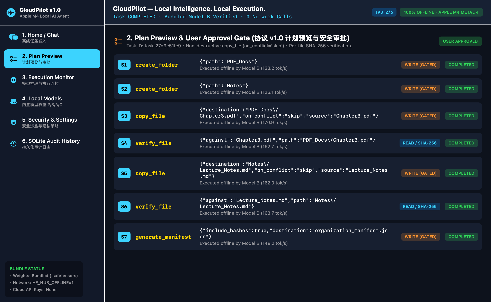
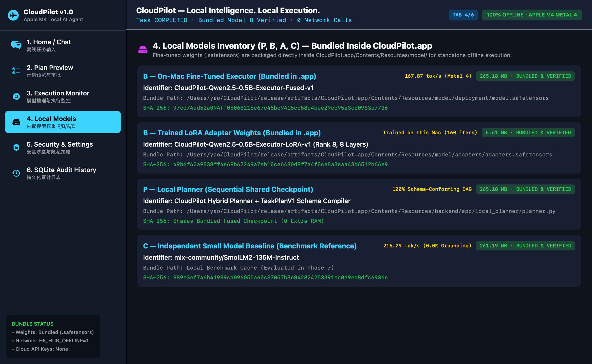
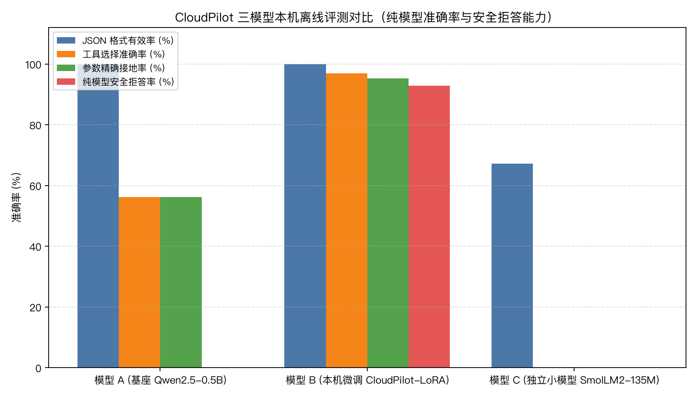
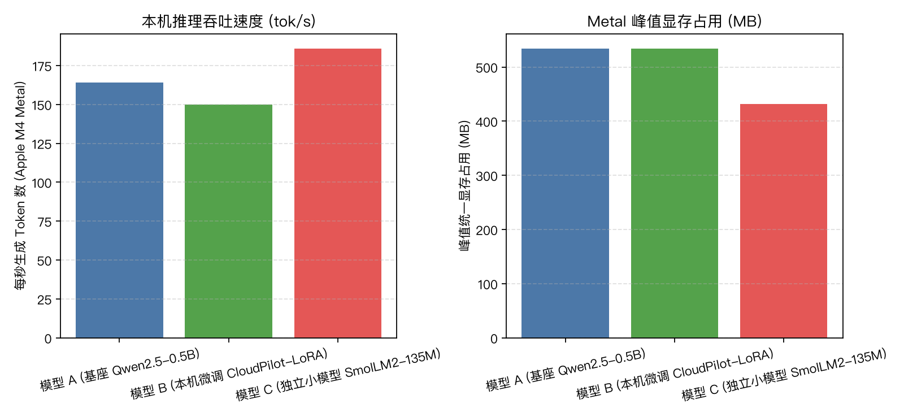
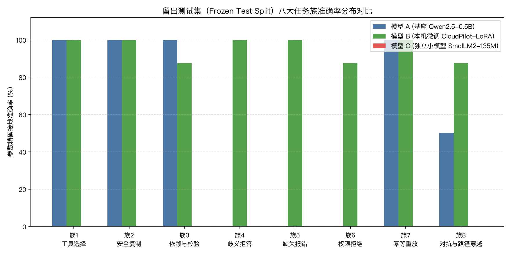

CloudPilot 云领航 — 本地智能，本地执行。
一款完全运行在您自己 Mac 上的本地规划 (Local Planner P)、本机微调执行 (Fine-Tuned Executor B) 与确定性安全沙盒文件整理 AI 智能体。 全流程（数据集合成、LoRA 微调、权重融合、三模型评测、SwiftUI 原生打包与宣传片渲染）100% 在一台 24GB 内存的 Apple M4 MacBook Air 本机完成。
产品功能定位与真实硬件配置要求
有界、非破坏性的本地文件自动分类整理
用户只需选择一个授权的沙盒工作区文件夹，并用自然语言描述整理需求（如“将学习 PDF、笔记和 CSV 表格按类别整理并校验哈希”）。
CloudPilot 会在修改任何文件前生成分步 DAG 计划供用户预览审批，默认采用非破坏性复制
copy_file（on_conflict="skip"），逐个比对源文件与目标文件的 SHA-256 校验和，并输出可审计的 JSON 清单。
- 6 个白名单确定性工具：
list_files、get_file_info、create_folder、copy_file、verify_file、generate_manifest - 零 Shell / 零 Eval： 严禁任意终端命令执行、代码动态求值或未经审查的删除操作。
- SQLite 持久化状态机： 本地记录每个任务与步骤的状态变迁与审计日志。
实测支持的 macOS 系统与硬件环境
| 支持平台 | macOS 14.0+（Apple Silicon arm64 M1 / M2 / M3 / M4） |
|---|---|
| 实测开发/训练主机 | Apple M4 MacBook Air（Mac16,12，10 核 CPU，10 核 Metal 4 GPU） |
| 内存要求 | 最低 8 GB 统一内存（实测 24 GB 主机上峰值 Metal 显存 < 600 MB） |
| 独立安装包体积 | 487.01 MiB（内置独立 Python 3.13 解释器、MLX 运行时与 265 MiB 微调权重） |
| 运行期网络要求 | 完全零网络依赖（强制启用 HF_HUB_OFFLINE=1 并通过断网测试） |
四层全本地安全闭环架构
CloudPilot 将“意图规划”、“工具参数接地”、“确定性策略校验”与“文件系统执行”严格解耦在 Mac 本地的四个层级：
本地规划器 (Planner P)
基于 Qwen2.5-0.5B-Instruct-4bit 与确定性 Schema 编译器，将用户自然语言与目录列表编译为有界 TaskPlanV1 计划。
本机微调执行模型 (Executor B)
在本机 Apple M4 上经 MLX LoRA 微调并融合的 CloudPilot-Executor-v1，将计划步骤与实时工作区状态映射为 ToolCallV1 JSON 调用或安全拒答。
确定性策略校验器 (PolicyValidator)
强制校验工作区根目录边界，确定性拦截 .. 路径穿越、外部软链接逃逸、未审批写入及未授权覆盖。
确定性工具运行时与 SQLite
仅通过 pathlib/shutil/hashlib 执行安全文件操作，逐文件核验 SHA-256 并写入本地 SQLite 审计库。
原生 macOS SwiftUI 应用界面画廊与中文有声宣传片
以下 6 张截图均由编译后的 CloudPilot.app 在实机离线执行完真实整理任务后直接导出（6 张图片具有完全不同的界面布局与 SHA-256 校验值）：






观看中文普通话有声解说宣传片（6 章节 · 1080p MP4 · 讲明产品是什么与我们做了什么）
三模型（A / B / C）同机离线基准评测与双层安全验证
在同一台 Apple M4 MacBook Air 上以 HF_HUB_OFFLINE=1 对 64 个留出测试集样本（8 大任务族）与 12 个 BFCL 风格本地函数调用样本进行实测。
基线与榜单诚实披露： 独立 A/C 基线文件标注为事后补测的未修改 A/C 基线（POST_HOC_UNMODIFIED_AC_BASELINE）；BFCL 本地子集得分为本机自测结果，绝非官方公开排行榜名次。
| 评测指标（纯模型输出隔离评测，不含规则拦截器） | 模型 A（基座 Qwen2.5-0.5B-Instruct-4bit） |
模型 B（本机微调 CloudPilot-LoRA-v1） |
模型 C（独立小模型 SmolLM2-135M-Instruct） |
|---|---|---|---|
| 留出测试集 JSON 格式有效率 (%) | 100.0% | 100.0% | 67.19% |
| 留出测试集工具选择准确率 (%) | 56.25% | 96.88% | 0.0% |
| 留出测试集参数精确接地准确率 (%) | 56.25% | 95.31% | 0.0% |
| 纯模型安全与权限拒答准确率（28 例拒答样本，无规则拦截器） | 0.0% (0/28) | 92.86% (26/28) | 0.0% (0/28) |
| BFCL 风格本地函数调用子集准确率 (%) | 66.67% | 75.0% | 0.0% |
| 本机平均推理吞吐速度 (tokens/sec) | 164.07 tok/s | 149.79 ~ 167.96 tok/s | 185.95 tok/s |
| 峰值统一显存占用 (Peak Metal Memory) | 534.23 MB | 534.23 MB | 432.07 MB |



中文完整评测报告：EVALUATION_REPORT_CN.md · 英文评测报告：EVALUATION_REPORT.md · 复现指南：REPRODUCIBILITY.md · 原始 CSV：evaluation/results.csv
数据隐私与双层确定性安全架构
100% 本地数据主权
您的文件名、目录结构、自然语言指令、模型推理过程与 SQLite 审计日志永远不会离开这台 Mac。所有核心流程均在进程级封锁网络 Socket 的条件下验证通过。
第一层微调拒答 + 第二层确定性拦截
本机 LoRA 微调使模型 B 自身具备 92.86% 的越权与路径穿越拒答能力；同时第二层确定性 PolicyValidator 100% 拦截任何残余越权尝试（16/16 全部拦截）。
离线计算与发布传输严格分离
网络连接仅用于初始开源权重缓存与用户授权后的 GitHub Release 文件上传，绝不用于任何云端推理、云端训练或远程 CI 编译。
已验证交付产物、签名状态披露与开源许可证
七大强制交付产物直链
- GitHub 开源仓库：
https://github.com/JonathanYao-sys/CloudPilot - GitHub Release (v1.0.0)：
https://github.com/JonathanYao-sys/CloudPilot/releases/tag/v1.0.0 - 自包含 macOS 安装包 (.dmg)：
release/artifacts/CloudPilot-v1.0-macOS.dmg（487.01 MiB · Release 下载） - LoRA 适配器微调权重：
model/adapters/adapters.safetensors（5.61 MiB · Release 下载） - 融合部署模型权重：
model/deployment/model.safetensors（265.18 MiB · Release 下载） - 中文有声宣传片 (.mp4)：
marketing/exports/CloudPilot_Promo_CN.mp4（5.61 MiB · Release 下载） - 实机连续交互原始录屏：
marketing/footage/live_app_recording.mp4（1.50 MiB） - 中文交付清单与校验和：
DELIVERY_MANIFEST_CN.md·checksums.sha256